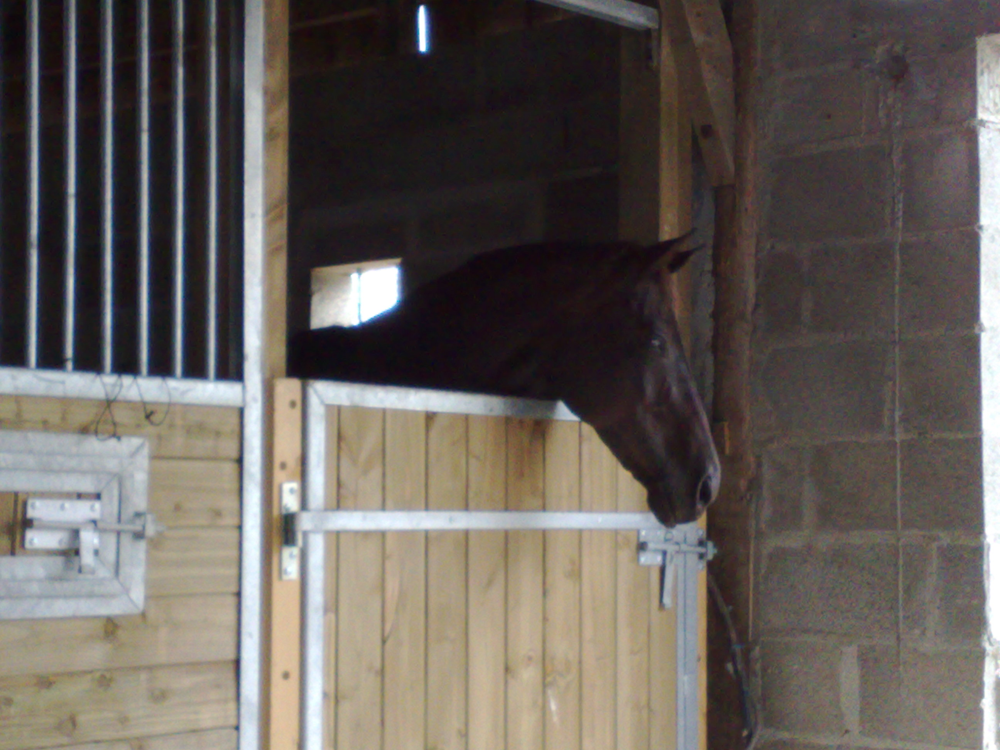
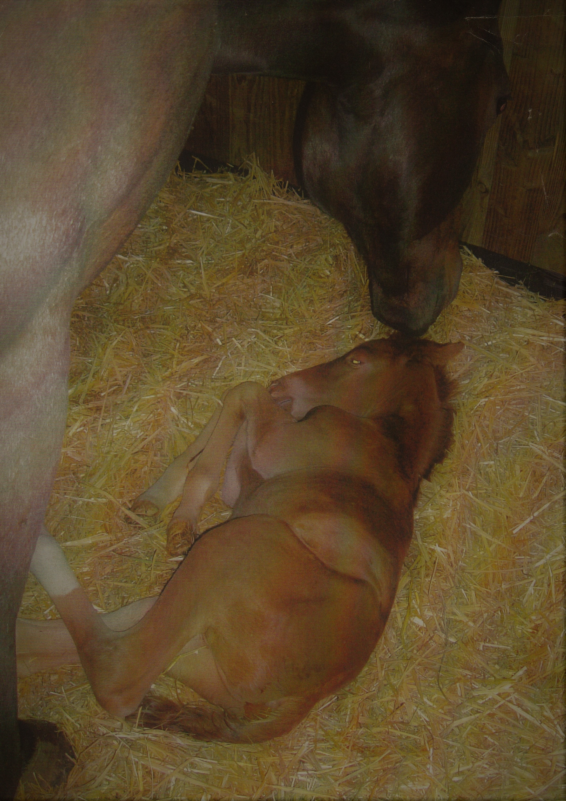

Je vais vous présenter mes deux chevaux: Sabakou et Taïga d'Orian. Ils sont nés respectivement en 2006 et 2007 et sont frère et soeur utérin,
issus de ma jument de compétition: Badia.
Ils ont une vie calme et heureuse, ont peu travaillé et sont maintenant à la retraite.

La maman: Badia
Sabakou: est né le 15/05/2006 a Fougeré (49), à l'élevage des Sens. J'ai beaucoup hésité pour le nommer, sa robe me faisait penser au Sahara
mais il était tellement chou que je voulait qu'il ait "ou" dans son nom. Sabakou vient de sabaku, mot japonais pour désert.

Sabakou à 1 jour
Taïga d'Orian: est également né le 15 mai à Fougeré (49), en 2007. Trés coquine et plus distante que son frère elle montrera très vite son petit caractère.
Pourquoi d'Orian, comme ça, pour la situer et faire un jeu de mot avec la taïga d'orient. Pour le moment je rêve de pouvoir lui faire faire quelques poulains.